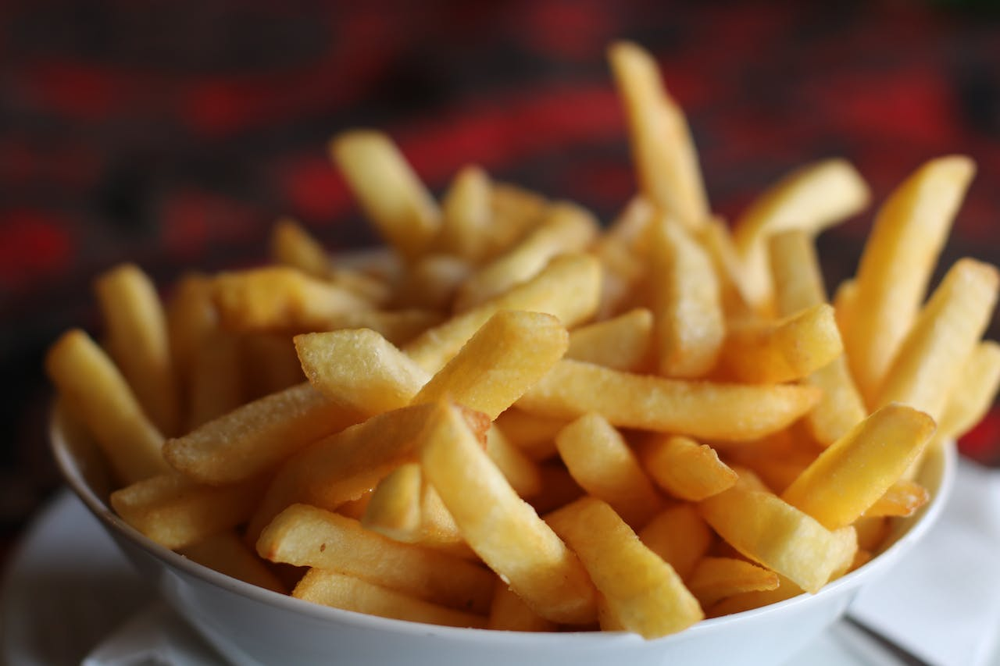

Fries Recipe

Description
Learn the secrect to making the most delicious homemade french fries from russet potatoes right at home.
Ingredients
- Potatoes
- Cooking Oil
- Spices
Steps
- Slice the Potatoes.
- Soak them cold in water.
- Rinse them twice.
- Heat oil to 300 degrees.
- Increae Heat to 400 degrees.
- Place them on paper towerls.